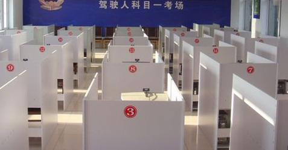

科目一考试流程(理论学习)：
学员在领取科目一考试受理凭证后，先核对受理凭证上的基本信息（如姓名、身份证号、照片、准驾车型）是否与本人相符，无误后按受理凭证上的考试时间和考试地点，到车管所考场参加考试。

到车管所后，持本人有效身份证原件、考试受理凭证和学员候考证在科目一考试室外排队依次进入考场。
进入考场时，先将身份证原件及受理凭证交给考官登录确认后，按计算机安排的座位号入座。入座后输入本人考试受理凭证流水号，按“确定”显示本人资料无误后再按“进入”进入考试，做完上一道题再点击下一道题。考试共计100道题，时间为45分钟，C照科目一90分合格。
注意：在考试过程中，改题按“选题”输入所需更改的题号，按“确定”后直接在屏幕上更改。结束考试按“结束”并再次根据屏幕中央的提示，按“结束考试”，看见分数后按“返回”退出考试。
考试结束，学员到“出口”处凭“考试受理凭证”打印考试成绩表及驾驶技能准考证明，并在《机动车驾驶人考试成绩表》科目一考试“被考人签名”栏签名，填写“考试当天的时间”，考场后将技能证明和成绩表交给学校领队，切勿遗失
自觉遵守考场纪律和维护考场秩序，严禁将考试书籍和个人随身携带的物品（包括手机、手提包）带入考场，禁止任何形式的作弊行为，保持肃静。否则，被车管所注销成绩或学籍，责任自负。